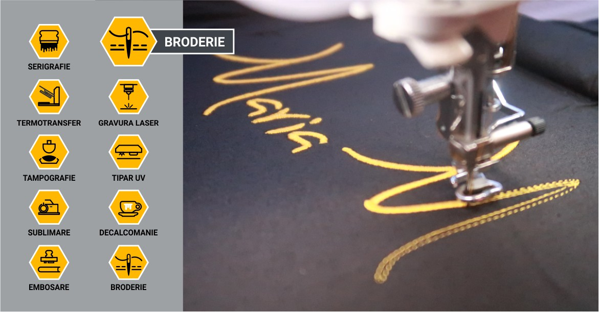
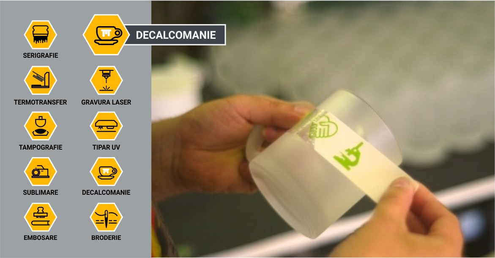
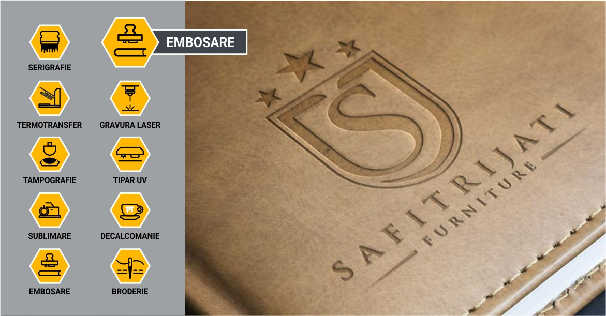
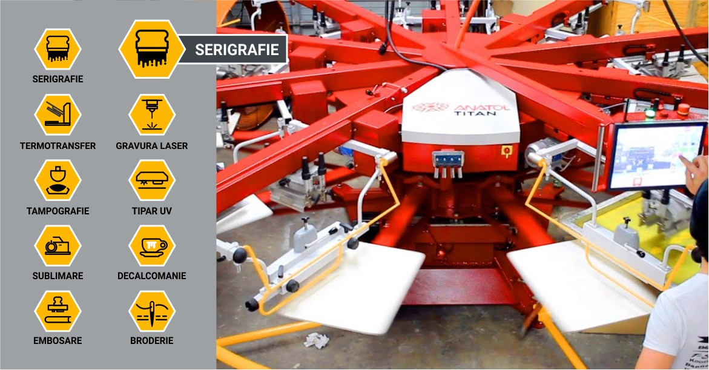
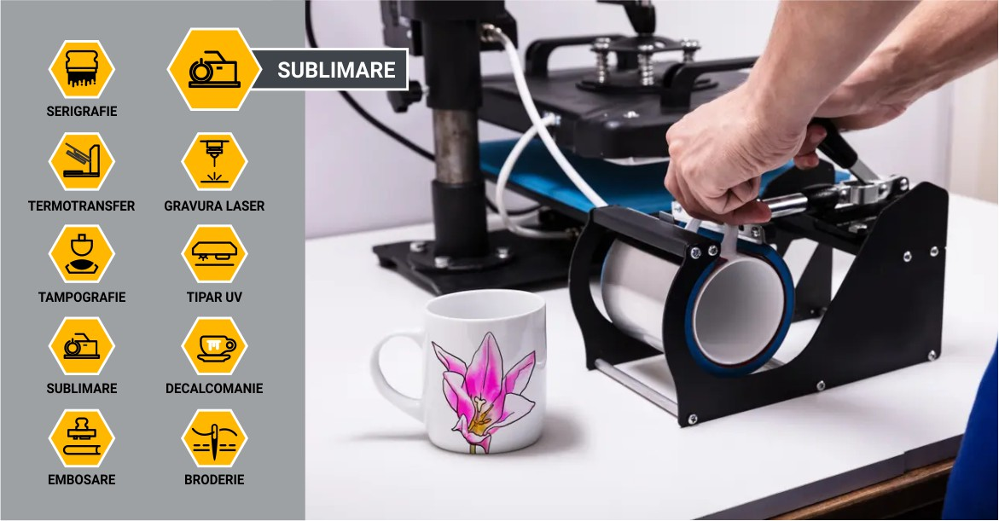
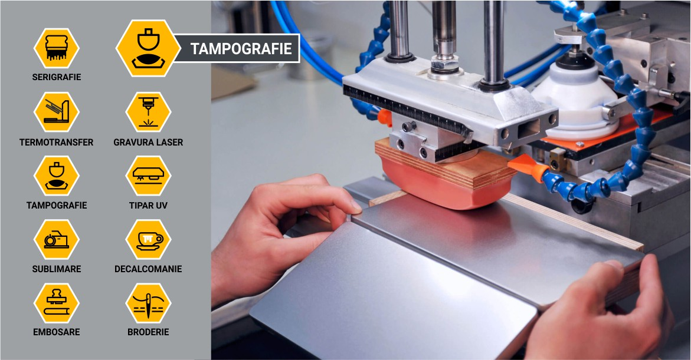
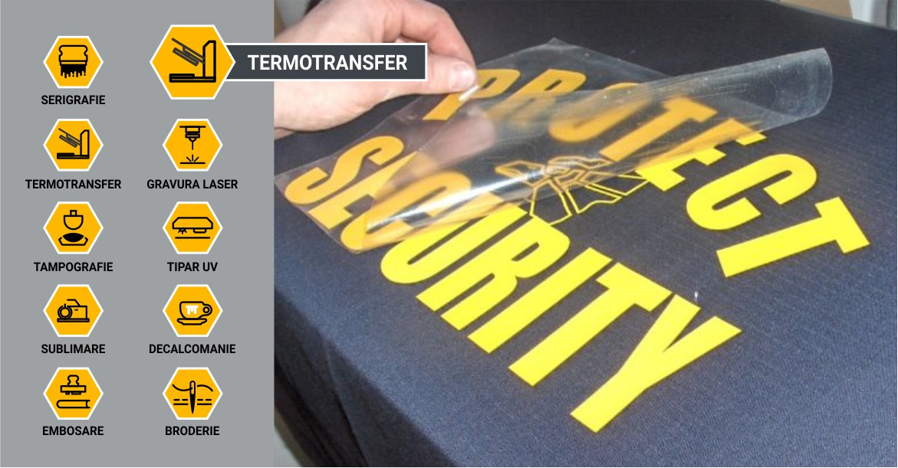
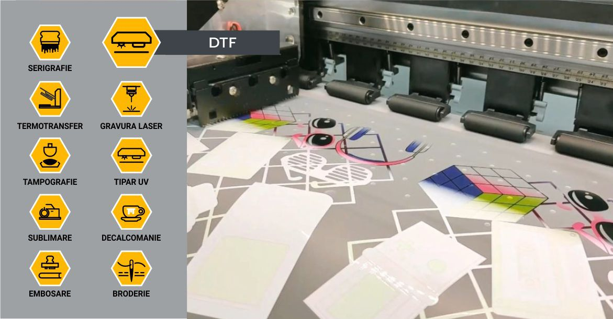

IMPRIMAREA UV este o formă de imprimare digitală care folosește lumini ultraviolete pentru a usca cerneala pe măsură ce aceasta este tipărită.
Modul de imprimare cu un printer flatbed UV este aproape identic cu modul de folosire al unei imprimante clasice cu jet de cerneală, cu mici diferențe:
Companiile de pretutindeni se străduiesc să găsească o metodă prin care să se diferențieze. Imprimarea UV vă poate câștiga atenția de care aveți nevoie din partea publicului țintă. Printarea UV oferă o soluție rapidă și bună pentru tiraje mici și medii și la cerere de imprimare, ce e mai mult extinde semnificativ granițele metodelor tradiționale de imprimare. Permite imprimarea și cu cerneală albă astfel obținem culori vii și pe suprafețe colorate.
Broderia computerizată este un procedeu prin care elementele grafice solicitate de client sunt prelucrate de un software conectat la mașinile de brodat. Broderia computerizată permite producția rapidă în cantități mici sau mari.
Personalizarea prin broderie conferă un caracter exclusivist și elegant articolelor promoționale pe care este realizată. Este o cusătură în relief realizată pe materiale textile, de către o mașină programată pe un anumit model. Broderia se folosește atunci când se dorește personalizarea pe șepci, tricouri, tricouri polo, haine, jachete, genți, salopete, produse din fleece/polar, etc.
Decalcomania este procedeul de transfer al imaginii pe suprafețele din ceramică, sticlă, porțelan, etc., prin ardere la temperaturi înalte. Designul poate avea mai multe culori și poate fi poziționat pe orice parte a obiectului, indiferent de formă. Rezultatul are o rezistență limitată la mașina de spălat.
Fiindcă este un procedeu complex (se împarte în mai mulți pași, pregătirile sunt minuțioase), nu personalizăm unul sau doar câteva produse. Cantitatea minimă începe de la câteva zeci de bucăți, în funcție de complexitatea designului.
Decalcomania este procedeul de transfer al imaginii pe suprafețele din ceramică, sticlă, porțelan, etc., prin ardere la temperaturi înalte. Designul poate avea mai multe culori și poate fi poziționat pe orice parte a obiectului, indiferent de formă. Rezultatul are o rezistență limitată la mașina de spălat.
Embosarea este o tehnică de finisare care se utilizează pentru a crea relief pe diferite materiale. Această tehnică poate fi aplicată la o varietate de produse, inclusiv invitații, cărți de vizită, ambalaje, etichete și chiar hărți geografice. Procesul implică crearea unui model tridimensional prin aplicarea presiunii asupra materialului, evidențiind astfel zona dorită și creând un aspect și o senzație tactilă.
GRAVURA este o procedură specială de inscripționare a obiectelor din metal, piele artificială realizată cu ajutorul laserului. Prin gravură laser se pot aplica și logouri cu mărime foarte mică.
Rezultatul gravării este influențat de materialul gravat. Metalul poate fi gravat, de exemplu, în mai multe moduri:
Procedura de inscripționare prin gravură laser poate fi deosebit de complexă și delicată, oferind durabilitate în timp și acuratețe lucrărilor. Produce o imagine permanentă, extrem de detaliată și fină, cu o rezoluție de până la 1200 dpi.
Serigrafia este o tehnică de imprimare tradițională folosită de mulți ani. Este procedeul prin care se imprimă diferite materiale, începând cu hârtia, materiale plastice și terminând cu textile sau metale.
Unul dintre motivele pentru care tehnica de serigrafie este atât de larg utilizată este pentru că produce culori vii, chiar și pe țesături mai închise. De asemenea, se poate reproduce cu ușurință un design de mai multe ori. Acest lucru face ca serigrafia să fie o tehnică foarte eficientă pentru crearea loturilor medii și mari de îmbrăcăminte personalizată și a altor obiecte promoționale ce pot fi personalizate prin serigrafie.
Sublimarea este un proces care constă în transferul cernelii în textura materialului, la o temperatură de 180 de grade Celsius. Acest proces permite imprimarea policromă, cu o vizibilitate ridicată, conferind în același timp o rezistență remarcabilă în timp.
În ceea ce privește produsele promoționale, sublimarea este o opțiune excelentă pentru a imprima articole precum tricouri, îmbrăcăminte sport, steaguri, mousepad-uri, căni, plăci ceramice sau lanyarduri.
Tampografia este un procedeu de inscripționare care folosește un tampon din cauciuc siliconic ca mediu de transfer al cernelei.
Această metodă de imprimare este cea mai potrivită pentru tipărirea siglelor mici, denumirilor de brand, descrierii produsului și diferitelor decorațiuni.
TERMOTRANSFERUL este procedeul de personalizare realizat prin aplicarea la cald, cu presa, a unor folii speciale (de print sau doar cut) sau cerneluri (sublimare, serigrafie) de termotransfer. Expresia "termotransfer" este o denumire generică pentru toate tipurile de personalizare ce implică presarea la cald: sublimare, folie printabilă, folie de cut, serigrafie-transfer. Sublimarea este descrisă la capitolul "Sublimare".
Folia printabilă este o folie specială, pe care se printează cu o imprimantă cu cerneală pe bază de solvent și se taie pe contur cu același utilaj. După îndepărtarea surplusului de material, folia se aplică cu ajutorul presei termice pe textil.
Aplicarea foliei de cut este similară cu cea a foliei printabile, cu următoarele diferențe:
Dacă se respectă instrucțiunile de folosire, o imprimare prin termotransfer rezistă foarte bine în timp.
DTF (Direct to Film) este o metodă modernă de imprimare digitală utilizată în special pentru personalizarea textilelor, în care designul este imprimat pe o folie specială și apoi transferat pe material prin presare termică. Această tehnică permite obținerea unor imprimeuri de înaltă calitate, cu culori vii și detalii fine, pe o varietate largă de materiale textile.